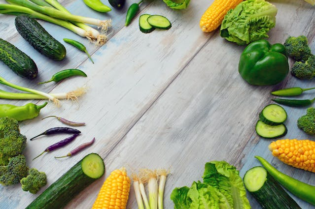

Benefícios de uma alimentação vegetariana
O reino vegetal tem uma infinidade de possibilidades de nutrientes e sabores. Uma alimentação vegetariana equilibrada e saudável pode trazer muitos benefícios à saúde, auxiliando na redução do risco de desenvolvimento de doenças cardiovasculares, além de diminuir o risco de obesidade, hipertensão e até alguns tipos de câncer”, destaca Marcela Worcemann, nutricionista especialista em nutrição plant based e esportiva.